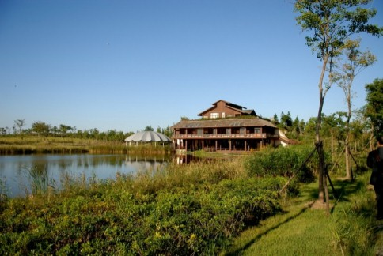

------------------------------------------------
|  |
|
观海楼是位于公园东北部的一幢三层木制结构的草顶建筑，整体风格质朴自然中又不乏典雅。这里西临公园中心湖，东可眺望东海，是公园内最重要的建筑景观和观景处之一。 观海楼一楼为餐厅，北侧有一个滨水旋转会场，可用于举办舞会Party等互动娱乐活动；二楼为科普创意馆，临湖沿廊设置咖吧，可尽情品享知识闲趣；三楼为贵宾会所，外平台是遍植花木的自然式屋顶花园，向东眺望，可怡情畅享旭日出东海之壮阔美景。周边有便利的游船码头、自行车和电动车服务站点。 |